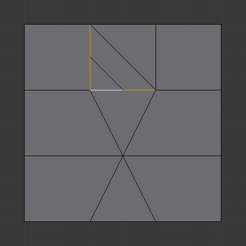
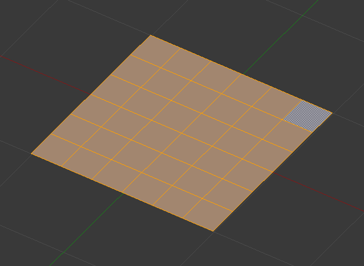

Subdivide¶
Reference
| Mode: | Edit Mode |
|---|---|
| Panel: | |
| Menu: | , |
Subdividing splits selected edges and faces by cutting them in half or more, adding new vertices, and subdividing accordingly the faces involved. It adds resolution to the mesh by divide faces or edges into smaller units.
This process follows a few rules, depending on the settings:
- When only one edge of a face is selected (Triangle mode), triangles are subdivided into two triangles, and quads, into three triangles.
- When two edges of a face are selected:
- If the face is a triangle, a new edge is created between the two new vertices, subdividing the triangle in a triangle and a quad.
- If the face is a quad, and the edges are neighbors, we have three possible behaviors, depending on the setting of Corner Cut Type (the select menu next to the Subdivide button, in Mesh Tools panel). See below for details.
- If the face is a quad, and the edges are opposite, the quad is just subdivided in two quads by the edge linking the two new vertices.
- When three edges of a face are selected:
- If the face is a triangle, this means the whole face is selected and it is then subdivided in four smaller triangles.
- If the face is a quad, first the two opposite edges are subdivided as described above. Then, the “middle” edge is subdivided, affecting its new “sub-quad” as described above for only one edge.
- When four edges of a face (a quad) are selected, the face is subdivided into four smaller quads.
Options¶
These options are available in the Tool Panel after running the tool;
- Number of Cuts
- Specifies the number of cuts per edge to make. By default this is 1, cutting edges in half. A value of 2 will cut it into thirds, and so on.
- Smoothness
Displaces subdivisions to maintain approximate curvature. The effect is similar to the way the Subdivision Surface Modifier might deform the mesh.

Mesh before subdividing.

Subdivided with no smoothing.

Subdivided with smoothing of 1.
- Quad/Tri Mode
- Forces subdivide to create triangles or quads instead of n-gons (see examples below). This mode doesn’t allow the use of Straight Cut on quad corners.
- Corner Cut Type
This select menu controls the way quads with only two adjacent selected edges are subdivided.
- Fan
- The quad is subdivided in a fan of four triangles, the common vertex being the one opposite to the selected edges.
- Inner vertices
- The selected edges are subdivided, then an edge is created between the two new vertices, creating a small triangle. This edge is also subdivided, and the “inner vertex” thus created is linked by another edge to the one opposite to the original selected edges. All this results in a quad subdivided in a triangle and two quads.
- Path
- First an edge is created between the two opposite ends of the selected edges, dividing the quad in two triangles. Then, the same goes for the involved triangle as described above.
- Straight Cut
- The selected edges are subdivided, then an edge is created between the two new vertices, creating a small triangle and n-gon.

Fan cut type.
Path cut type.
- Fractal
Displaces the vertices in random directions after the mesh is subdivided.

Plane before subdivision.
Regular subdivision.

Same mesh with fractal added.
- Along Normal
Causes the vertices to move along their normals, instead of random directions.

Along normal set to 1.
- Random Seed
Changes the random seed of the Fractal noise function, producing a different result for each seed value.

Same mesh with a different seed value.
Examples¶
Below are several examples illustrating the various possibilities of the Subdivide and Subdivide Multi tools. Note the selection after subdivision.

The sample mesh.
One Edge¶

One Edge. |
Two Tri Edges¶

|

Quad/Tri Mode. |


Tri¶

Quad/Tri Mode. |
Quad/Four Edges¶

Quad/Tri Mode. |

{kind=link}
{kind=link}
{kind=link}
{kind=link}
{kind=link}
{kind=link}
{kind=link}
{kind=link}
{kind=link}
{kind=link}
Un-Subdivide¶
Reference
| Mode: | Edit Mode |
|---|---|
| Menu: |
Unsubdivide functions as the reverse of subdivide by attempting to remove edges that were the result of a subdivide operation. If additional editing has been done after the subdivide operation, unexpected results may occur.
- Iterations
- How many subdivisions to remove.